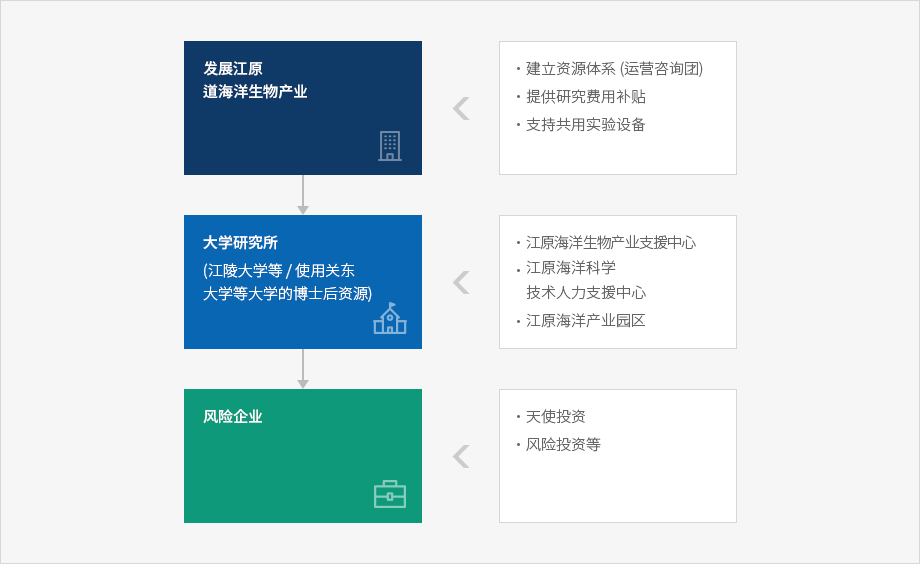

海洋生物产业的特性
-
海洋生物产业作为生命工程学的一个部门，指的是操作或利用特定海洋生物的全部或一部分。其本身并非指一个学术领域，而是指可以用于解决某种问题或开发产品及工艺的工作或技术。
- 海洋生物产业是利用海洋中存在的原料，目前研究尚少，开发与发展的可能性高，利用分子遗传工程学对海洋微生物、海洋微小藻类、海洋植物及海洋动物等的研究十分活跃。
江原圈的海洋生物产业现况
- 1998 年以后增设了海洋生物产业相关研究所，对海洋生物的研究支援基础不断扩大。
- 江陵大学创业保育中心、江陵 S/W 支援中心扩大、江陵大学海洋生物产业研究计划、水产种苗批量生产放流事业、江原专科大学海洋生物计划、江原专科大学创业保育中心设立等工作正在推进中。
-
江陵大学创业保育中心及海洋生物产业研究计划
- 为强化东海岸水产业发展所需的研究功能，构建东海岸水产研究机构合作体制，通过新品种开发提高渔民收入，实现地区水产品的高附加值化，以东海岸海洋生物资源研究中心为中心实施研究计划 (截止 2005 年) 。
-
扩大江陵 S/W 支援中心
- 向与水产·海洋生物产业领域相关的新创业者提供技术及经营支援等，重点推进利用海洋深层水的高附加值海洋生物生产技术研究、消波堤及耐波性围堰利用方法研究等 (2001-2005)
中央政府的海洋生物产业培育方案
-
海洋水产部推进的海洋资源相关研究开发正在从尖端水产技术开发事业、水产试验研究事业、海洋生物提取有用新物质研究事业等 3 个方面实施。
- 生命工程学相关技术开发研究 (1995~2004, 245 亿韩元),水产试验研究事业，有用新物质研究事业 (1 阶段： 1999~2001, 14 亿韩元)
-
1999 年，海洋生物产业基础设施构建事业以政府资助研究所为中心，向 “韩国主要海洋水产资源保存、管理系统”、 “海洋生物遗传基因库构建事业”、 “增大有用海产鱼类资源研究” 等项目投入预算 16 亿 8000 万韩元。
- 通过积极支援海洋水产领域中小、 风险企业的技术开发及创业活动，扩充海洋产业的发展基础，特别是为集中支援高实用性及成长可能性的尖端知识产业领域，计划设立运营 “海洋水产风险企划团” 。
培育海洋生物产业需要的功能
-
增大产·学研究合作：迄今为止，由于对海洋产业的认识及投资不足，技术开发水平远远落后于发达国家。
- 因此，需要通过扩充能够高效运用产·学研究合作系统的计划，确立高效的研究开发系统。
- 人才培养：海洋生物产业具备持续研究力量所需的研究人才取得与再教育系统
- 海洋生物产业支援中心：用于培养海洋产业相关一般企业及风险企业的支援系统
- 搞活海洋风险企业创业：实验室创业、分离创业等可在大学及企业中培养生物风险企业的系统
江原海洋生物产业发展战略
-
为培育江原海洋生物产业，与 1998 年以后增大的研究开发与相关部门，特别是江陵大学和江原道立大学、关东大学等推进的创业保育中心、海洋生物产业相关研究计划相衔接。

-
发展江原道海洋生物产业
- 建立资源体系（运营咨询团）
- 提供研究费用补贴
- 支持共用实验设备
-
大学研究所（江陵大学等）/（使用关东大学等大学的博士后资源）
- 江原海洋生物产业支援中心
- 江原海洋科学技术人力支援中心
- 江原海洋产业园区
-
风险企业

-
创造使创业保育中心期满企业入驻海洋生物产业支援中心并可以持续发挥研究开发功能的条件。
- 利用海洋科学技术人才支援中心的功能，扩充专业人才，提供今后在海洋生物支援中心成长的一般企业及风险企业入驻并可以从事生产活动的空间及条件
-
从江原地区的海洋产业前景领域来看，可以分为海洋生物 (海洋生命、养殖、水产)、海洋相关软件、海洋环境区及消波堤、海洋相关咨询、海洋信息通信、海洋测量用传感器及设备、海洋相关工程、海洋能源 (海浪能源、温差能源、海流能源)、海水淡化相关技术、沿岸 Waterfront、码头相关技术、海洋旅游相关信息产业、沿岸整治等。
- 海洋生物领域中，新技术开发以医科大学为中心，构建海洋生物相关研究开发系统。
- 细分为海洋生命工程学、水产工程学、养殖工程学，与江陵圈内大学相联系，利用地区内大学从事海洋养殖研究 (江陵大学)、海洋生命研究 (关东大学医大)、水产科学 (江原道立大学) 等。
-
初期阶段，创造在创业保育中心期满的企业入驻海洋生物产业支援中心并能够持续发挥研究开发功能的条件
- 同时，利用海洋科学技术人才支援中心的功能扩充专业人才。
- 今后，提供可供在海洋生物支援中心成长的一般企业及风险企业入驻并从事生产活动的物理空间
- 海洋产业中心展开海洋环境技术、海洋信息通信研究、海洋生命研究、海洋养殖研究、水产科学研究等各个部门的特化研究 (在中心选址问题上，考虑地区内条件并审议后选定)
-
针对海洋生物工程设备等，构建新材料产业与信息共享系统
- 把海洋生物产业与新材料产业 (精细陶瓷) 培育成江原东部圈的支柱产业。
事业提案
- 与海洋水产部的国家层次上的海洋产业培育方案相衔接，在东海岸圈吸引海洋生物风险中心，培育海洋生物相关风险企业。
- 构建确保海洋生物产业相关高级人才及通过基础企业人才再教育等确保高级人才的系统。
- 长期而言，在附近工业园区地区内建成 5~10 万坪规模的海洋生物产业园区，使江陵海洋生物产业支援中心培育的企业可以入驻